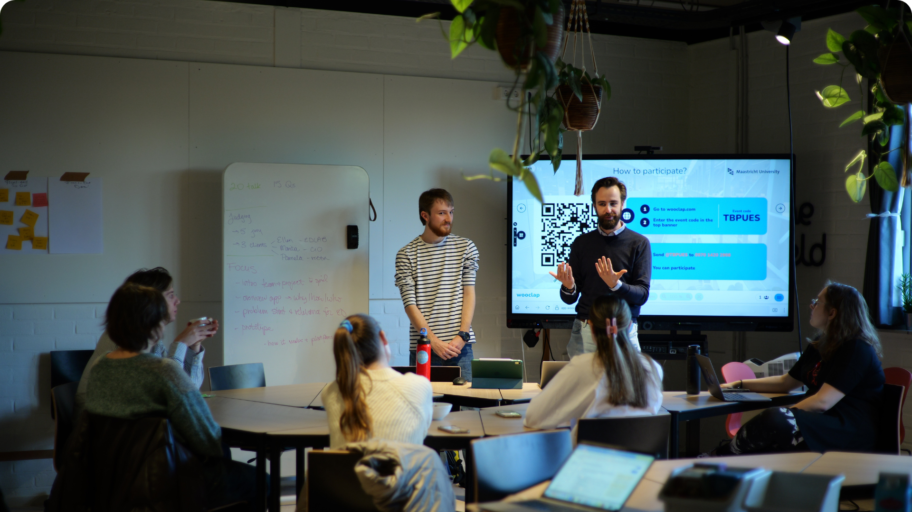
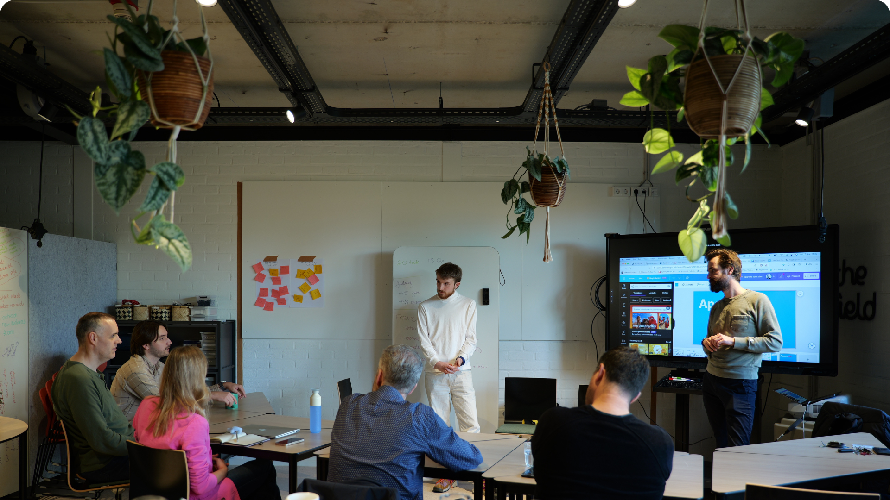
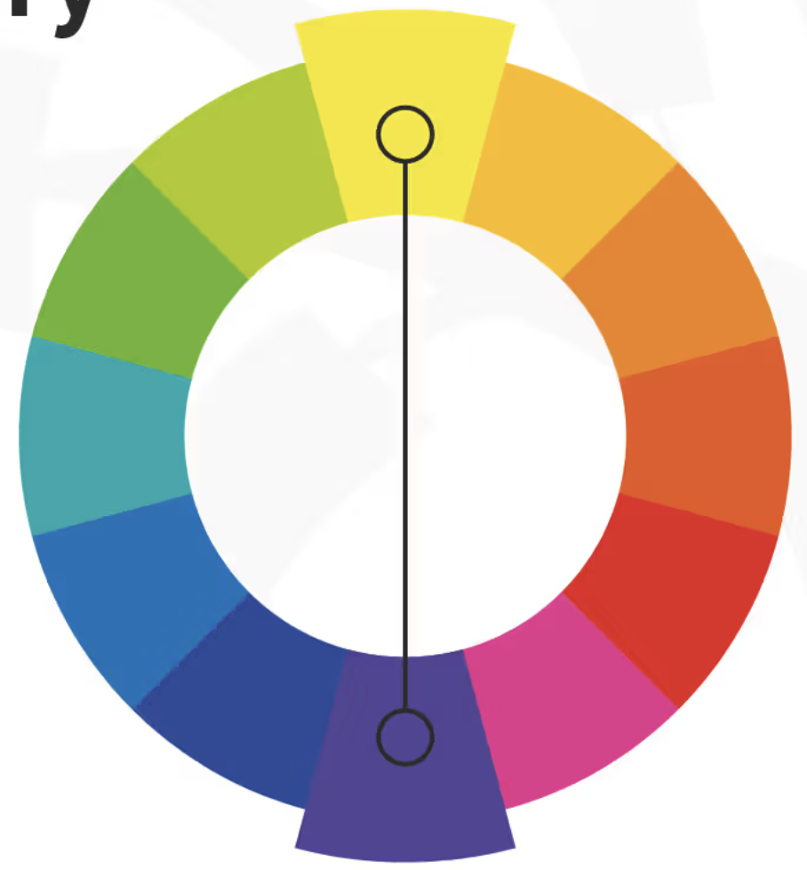
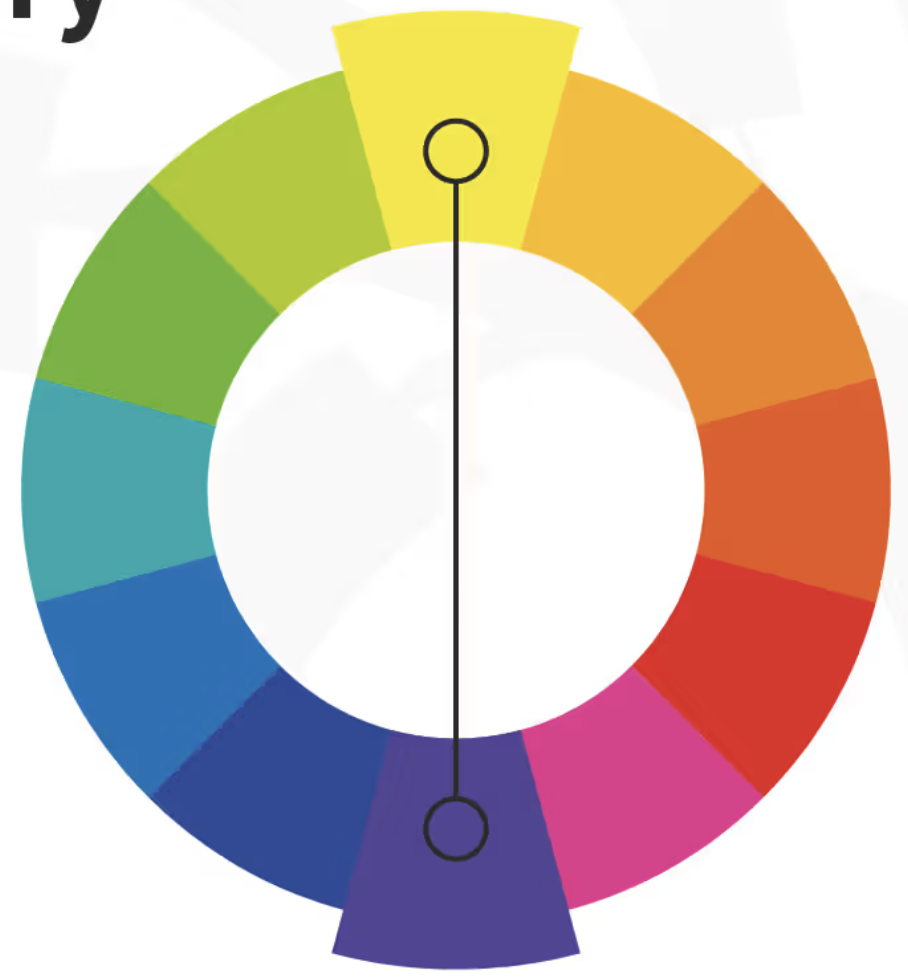
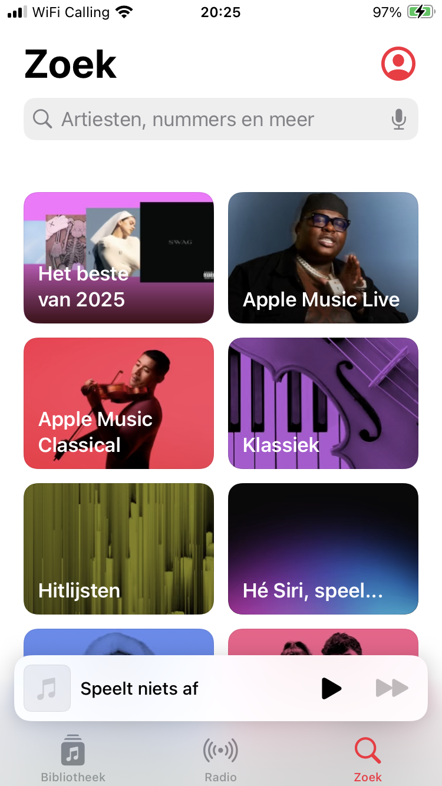
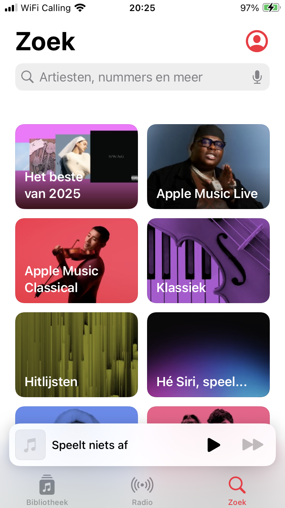

Maastricht University’s information platforms (websites, student intranet, canvas, etc.) are intended to provide clear, accurate, structured, and easy-to-find information regarding programs, procedures, and courses.
We have observed that this compartmentalized information architecture is not meeting that goal; causing confusion, disorientation, and information overload in students.
Empathize - Define - Ideate (students)

Empathize - Define - Ideate (staff)

Solution
An AI-based chatbot, trained on UM materials. A user-friendly, mobile-first interface enables students to ask questions and receive prompt, accurate, and contextually relevant guidance for finding their answers.
No more hunting through different platforms; the chatbot consolidates everything you need in one place.
ApareciUM
Empathize
Empathize - What?
Observe (Behavioral approach)
Listen and Engage (Attitudinal approach)
what people do and how they interact with their environment
to understand their beliefs (what they say and think) and the values they hold.
---
💡 Notice a disconnect between what someone says and what he does.
How might we provide up to date information about study programme rules and regulations for first-year bachelor students at FASoS so that they are correctly and in time informed.
Key components of a User Story
Key component
Template
Example
User Role
As a [persona]
As a user
User Intent
I [want to]
I want to reset my password
User Goal
[so that]
so that I can regain access to my account.
Ideate
Ideate - What?
idea generation
use your imagination and creativity to push for the widest possible range of original solution concepts
not finding a single, best solution
disregarding the obvious solutions
Ideate - How?
Depending on the idea - Different questions to ask:
Start building = the iterative generation of an app design
Low and high-fidelity prototypes
Develop
It is my clear conviction that the best products are built by teams made of multiple professionals from various disciplines who have a mutual understand of each other. Development shouldn’t be devoid of a design presence and design shouldn’t be without development know-how.
Imagine having a deep conversation with your user(s) to understand their frustrations, needs and wants.
Completed User Persona | Empathize Map | User Journey Map
2 - Define
Analyse the information gathered in the previous step to identify and define the problem with a clear and concise problem statement. Using template 2 Download template 2, try to describe exactly what the problem is that you want to solve with your application.
3 How Might We | User Story statements
3 - Prototype
Create a tangible design to get feedback from the target user you want to serve with your app. Design wireframes (screen sketches of what your app will look like) that show how the user will interact with your app.
Create Wireframes | Story Board | Prototype using 1 online tool (Figma, Sketch, Balsamiq)


 

 



{kind=link}
{kind=link}
{kind=link}